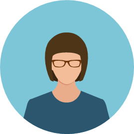
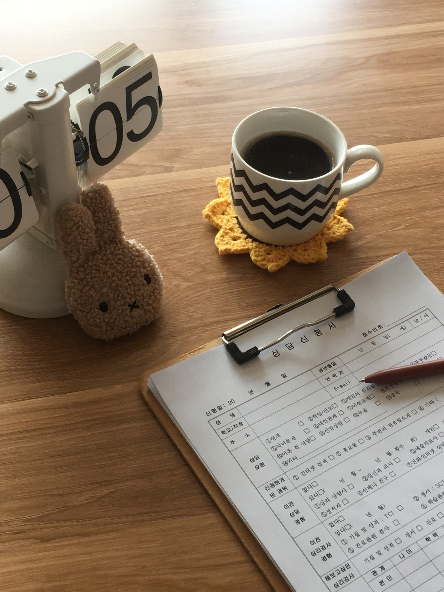
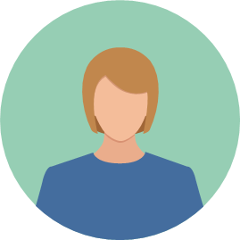
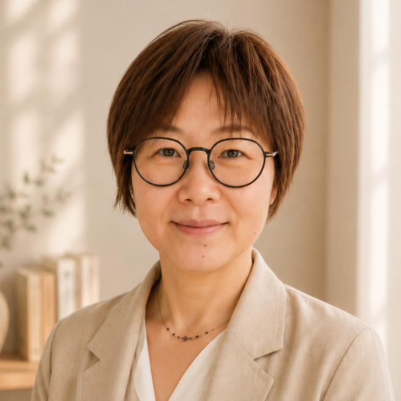
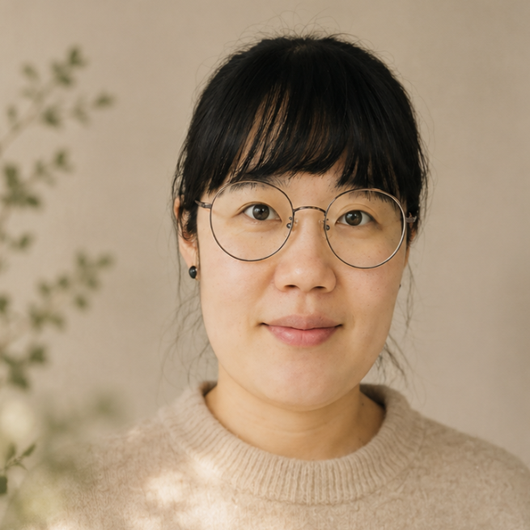
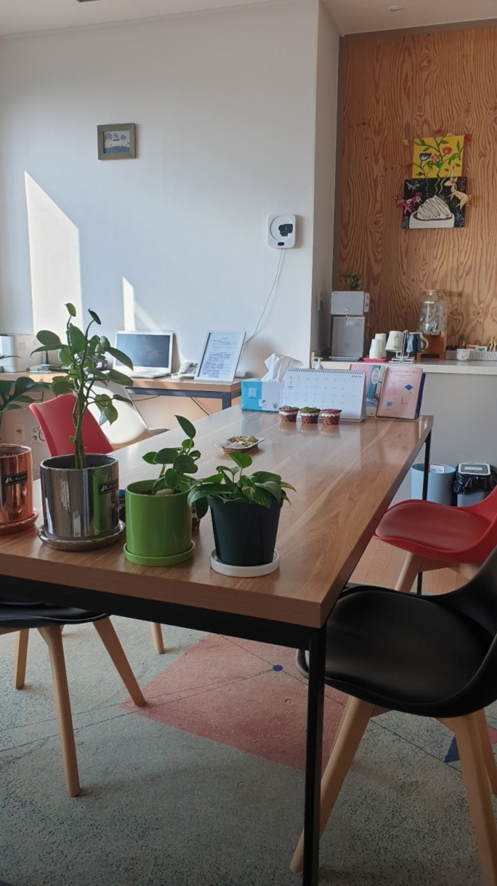
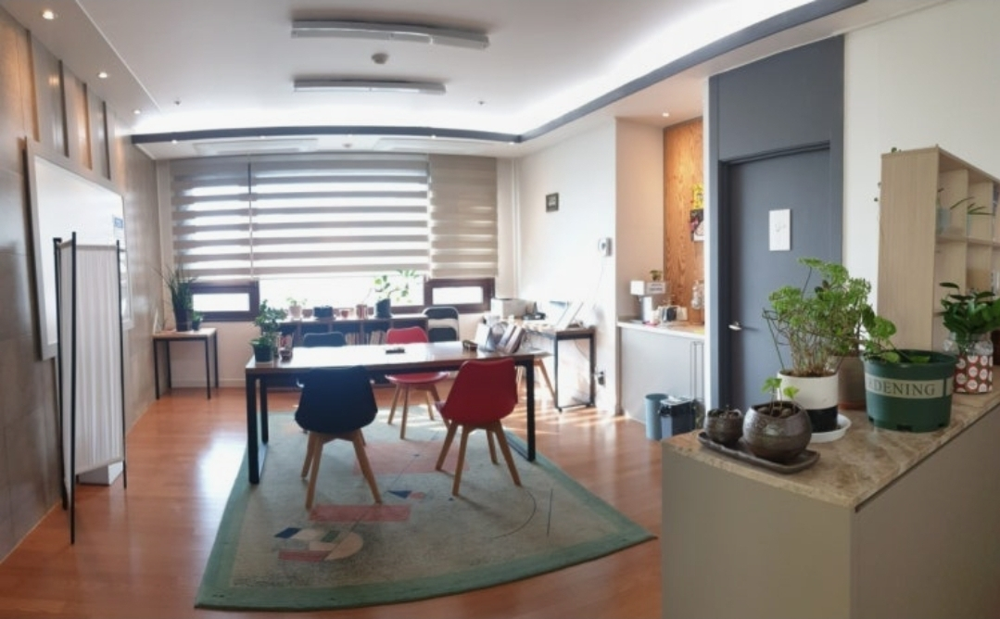
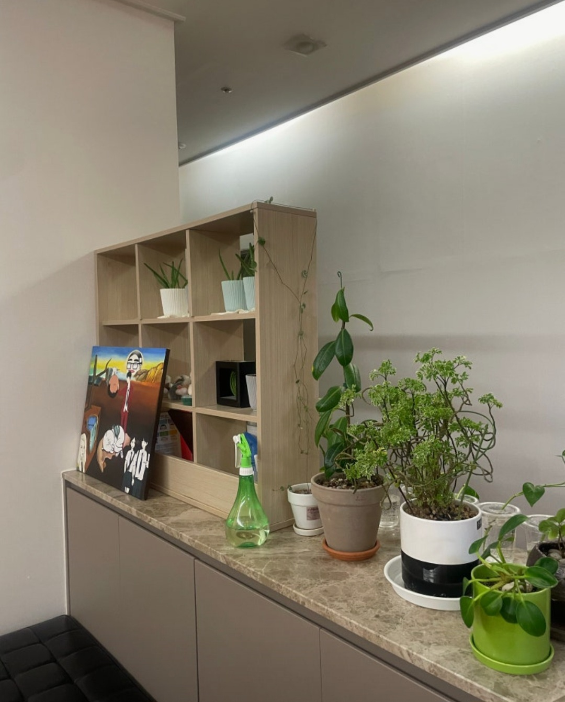

내담자 A님 상담후기
“
안전하게 이야기할 수 있는 관계
힘든 일을 편하게 털어놓을 수 있는 안전한 선생님이 있다는 게 큰 힘이 되었습니다.
문제를 빨리 해결하려고 자신을 다그치기보다, 내 마음이 왜 그렇게 애쓸 수밖에 없었는지 함께 이해해볼 시간입니다.
마음풍경은 힘든 마음을 성급히 없애려 하기보다 그 이유를 안전하게 이해하고, 상담이 끝난 뒤에도 스스로 자신의 마음을 알아차리고 돌볼 수 있도록 돕습니다.
상담 안내 및 신청하기상담자 먼저 살펴보기
바로 상담을 결정하기 어렵다면, 마음풍경이 상담을 어떻게 바라보는지 먼저 들어보셔도 좋습니다.
문제가 아주 심각해야만 상담을 받을 수 있는 것은 아닙니다. 혼자 오래 애써도 같은 어려움이 반복된다면 상담에서 함께 살펴볼 수 있습니다.
말할 준비가 된 만큼, 나에게 맞는 속도로 시작합니다.
무엇을 해야 하는지만 말하기보다 알면서도 그렇게 하지 못하게 만드는 마음의 이유와 반복되는 패턴을 함께 살펴봅니다.
불안, 눈치 보는 마음, 자기비난을 성급히 없애기보다 왜 그렇게 애쓸 수밖에 없었는지 이해합니다.
감정과 반응을 알아차리고 비슷한 어려움이 찾아왔을 때 스스로 이해하고 돌보는 힘을 키워갑니다.
치유는 마음을 없애는 것이 아니라,
내 마음과 새로운 관계를 맺는 데서 시작됩니다.
상담의 과정과 변화의 속도는 사람마다 다릅니다.
실제 네이버 플레이스에 남겨주신 방문자 후기 중 일부입니다.

힘든 일을 편하게 털어놓을 수 있는 안전한 선생님이 있다는 게 큰 힘이 되었습니다.
꾸준히 내 마음을 알아차리고 알아주는 작업을 반복하다 보니 마음이 한결 편안해지고 갈등도 줄었습니다.

내 안의 소리에 귀를 기울이는 경험은 제 자신에게 집중해보는 가치 있는 시간이었습니다.
상담자의 자격과 경력뿐 아니라 나의 어려움과 상담 방식이 잘 맞는지도 중요합니다. 원하는 상담자를 적어주시거나, 선택이 어렵다면 현재 고민과 가능한 일정을 남겨주세요.

아주대학교 상담심리전공 석·박사
한국상담심리학회 상담심리사 1급 제281호
25년 임상·교육 및 상담자 수련감독 경력
자기비난과 불안, 반복되는 관계 어려움, 부부·가족관계

아주대학교 심리학 박사
한국상담심리학회 상담심리사 1급
15년 상담 경력, 마음풍경에서 6년째 상담
자존감과 자기비난, 관계갈등, 부부관계, 청소년상담
아주대학교 상담심리전공 박사수료
한국상담심리학회 상담심리사 2급
15년 상담 경력
감정표현, 대인관계, 스트레스, 청소년·성인 적응
정확한 가능 시간은 신청 후 안내드립니다.
마음을 이야기하는 시간만큼 머무는 공간도 편안하기를 바랍니다.



현재의 어려움과 상담을 원하는 내용을 간단히 남겨주세요.
신청 내용을 확인한 뒤 가능한 일정과 상담자를 개별 안내합니다.
현재 무엇이 힘든지, 어떤 도움을 기대하는지 함께 살펴봅니다.
첫 상담을 경험한 뒤 계속 진행할지 충분히 생각하고 결정할 수 있습니다.
상담을 결정하시기 전에 비용과 시간을 미리 확인하실 수 있습니다.
50분
상담자에 따라 비용이 다릅니다.
100분
상담자에 따라 비용이 다릅니다.
50분 · 비대면
TCI · MMPI · SCT
모든 상담은 예약제로 운영됩니다. 상담 내용의 비밀보장과 상담 관련 윤리기준을 준수합니다.
경기도 수원시 영통구 봉영로 1620, 대우월드마크 오피스텔 804호
수인분당선 1번 출구
도보 3분
수인분당선 3번 출구
도보 3분
방문자 3시간 무료
상담 완료 후 상담실에 차량번호 등록 요청
상담을 받아야 할 문제가 따로 정해져 있는 것은 아닙니다. 어려움의 종류보다 그 문제로 인해 내가 얼마나 힘들고 일상과 관계에 어떤 영향을 받고 있는지가 중요합니다.
아닙니다. 말할 준비가 된 만큼 천천히 진행합니다. 지금 겪는 어려움부터 시작해도 괜찮습니다.
첫 상담은 현재 상태와 상담 목표를 살펴보고 이 상담자와 계속 이야기해도 괜찮을지를 확인하는 시간이기도 합니다. 이후 상담 여부는 충분히 생각한 뒤 결정할 수 있습니다.
신청서에 원하는 상담자를 적어주세요. 일정과 상담 가능 여부를 확인해 안내드립니다. 선택이 어렵다면 상담 주제와 가능한 일정을 고려해 안내해드립니다.
잠과 식사, 출근이나 학업 등 일상생활을 유지하기 어렵거나 증상이 매우 심하다면 정신건강의학과에서 먼저 현재 상태를 평가받는 것이 도움이 될 수 있습니다. 약물치료와 심리상담은 필요에 따라 함께 진행할 수도 있습니다.
자신이나 타인을 해칠 위험이 있거나 즉각적인 도움이 필요한 위기 상황이라면 상담신청서보다 112, 119 또는 가까운 응급실을 먼저 이용해 주세요.
어디서부터 말해야 할지 모르겠다는 마음부터 시작해도 됩니다.
신청 내용을 확인한 뒤 가능한 일정과 상담자를 개별적으로 안내드립니다.
신청서를 작성한다고 상담이 바로 확정되거나 비용이 결제되는 것은 아닙니다.